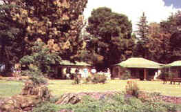
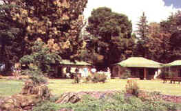

|
Malealea Lodge is situated in a remote south-western part of Lesotho - breathtaking in its beauty and challenging to the off-road adventurer.
Malealea Lodge is run by the owners, Mick & Di Jones, both born in Lesotho and credited with more local knowledge than anyone. Various Basotho Children's choirs entertain the guests in the evenings around a campfire and play their local musical instruments. Malealea offers Lesotho in a nutshell
OVERNIGHT HIKING & HORSE TREKS Take the "donkey work" out of backpacking by hiring
horses to carry your luggage. WHAT TO BRING Food, Sleeping Bag, rainsuit & warm clothing, towels, sunscreen, hat, torch, water bottle & tablets. First aid kit.
Bring your own cooking equipment & mattresses and explore Lesotho with a Basotho Guide, discovering new routes and remote villages for any number of days.
Start your Lesotho Adventure at Malealea, exploring the day outings, before travelling across the country. A Basotho Companion can be arranged at Malealea to accompany your trip, introducing you to local chiefs, where you might like to camp for the night, ensuring your safety or general curiosity from inquisitive children.
See Southern Africa 4x4 Trails - page 220 - - Andrew St Pierre White Instead of ending the trail at Maseru, it could be continued to Malealea where visitors can spend a couple of days at the lodge. Also suitable for a week-end to test out 4x4 vehicles on surrounding tracks & trails in the area. See Getaway - April and May issue for Southern route starting at Malealea Katse Dam or Sani Pass via Thaba Tseka, Molimo Nthuse to Malealea.
We can arrange for Basotho companions to travel with clients in their 4x4 vehicles introducing them to various villages, where they can camp overnight and be welcomed and protected by the various villages. The chiefs are usually most hospitable, and a fee of R10.00pp is recommended to pay the chief. This will encourage and involve tourism with the local Basotho people. At the moment people are just camping anywhere in full view of passing traffic along the roadside. We have made contact with various villages that are just off the main roads and people can enjoy a "Special Basotho Experience". Adventures & Routes from Malelea Suggested Driving Tours around Lesotho Malealea to Sani Pass via the Southern Route
MALEALEA LODGE RATES Prices quoted in SA Rands (R6.00 = $1.00)
HORSE TREK RATES
FOR MORE INFORMATION READ Getaway, November '95 - Pony Trekking Getaway, April & May '98 - 4x4 Adventure in Lesotho Lonely Planet travel Guide - pages 612 & 613 Secret Southern Africa, pages 198 & 199. Africa: The South - pages 198 & 199 DIRECTIONS TO MALEALEA LODGE Johannesburg (500km) -
Kroonstad,Ventersburg,Senekal,Marquard, Clocolan, Ladybrand, Maseru, Motsekuoa, Malealea New Bypass around Maseru Just after entering Maseru border post, drive for 1 km, turn RIGHT onto the Mafeteng Road. This bypass will take you past Maseru near the airport. Turn RIGHT and continue until you get to the Motsekuoa turnoff to Malealea, as directed below for ALL DIRECTIONS. At Motsekuoa, opposite the Golden Rose Restaurant & Taxi Corner, turn onto a newly tarred road & gravel road. Drive for 10km, fork right and drive for another 15km. Turn left and travel one kilometre, over the Gates of Paradise Pass and drive another 6km to Malealea Lodge. The last 33km is gravel road, but is under construction and being tarred.
CONTACT US
|
|||||||||||||||||||||||||||
 Lesotho is a world without fences. Breathtaking scenery abounds
and every season has unique attractions.
Lesotho is a world without fences. Breathtaking scenery abounds
and every season has unique attractions.  These outings range from 1 hour to 6 days or longer tailor-made
to your requirements. The treks are usually about 7 hours each day. No riding experience
is necessary. The huts and horses are hired from the Basotho people in remote areas. The
huts are very basic and are equipped with a gas cooker, cooking & eating utensils,
mattresses on the floor. On trek you experience "THE REAL AFRICA". The trails
traverse spectacular mountain passes and some of Lesotho's highest waterfalls exploring
Bushman paintings and experiencing "Basotho culture". Basotho Guides and a
packhorse accompany the treks.
These outings range from 1 hour to 6 days or longer tailor-made
to your requirements. The treks are usually about 7 hours each day. No riding experience
is necessary. The huts and horses are hired from the Basotho people in remote areas. The
huts are very basic and are equipped with a gas cooker, cooking & eating utensils,
mattresses on the floor. On trek you experience "THE REAL AFRICA". The trails
traverse spectacular mountain passes and some of Lesotho's highest waterfalls exploring
Bushman paintings and experiencing "Basotho culture". Basotho Guides and a
packhorse accompany the treks. SPECIAL: "GO ANYWHERE
TREK".
SPECIAL: "GO ANYWHERE
TREK". DAY HIKES & DAY PONY TREKS
DAY HIKES & DAY PONY TREKS Take the back route on the A3, turn left towards Roma, drive on
the Semonkong Road. At Moitsupeli, where the tar ends, turn right, drive one kilometre,
turn left past Tlali Trading station and drive for 35km.At a T-junction, turn left to
Malealea via Sebelekoane for another 35kms (There is a Malealea Sign at the T-junction,
but often gets knocked down by bored herdboys!) From Sebelekoane to Malealea is one of the
most spectacular drives hugging along the mountainside overlooking sandstone valleys
passing by the Botsoela waterfall, as you descend and ascend an almost miniture "Sani
Pass".
Take the back route on the A3, turn left towards Roma, drive on
the Semonkong Road. At Moitsupeli, where the tar ends, turn right, drive one kilometre,
turn left past Tlali Trading station and drive for 35km.At a T-junction, turn left to
Malealea via Sebelekoane for another 35kms (There is a Malealea Sign at the T-junction,
but often gets knocked down by bored herdboys!) From Sebelekoane to Malealea is one of the
most spectacular drives hugging along the mountainside overlooking sandstone valleys
passing by the Botsoela waterfall, as you descend and ascend an almost miniture "Sani
Pass".